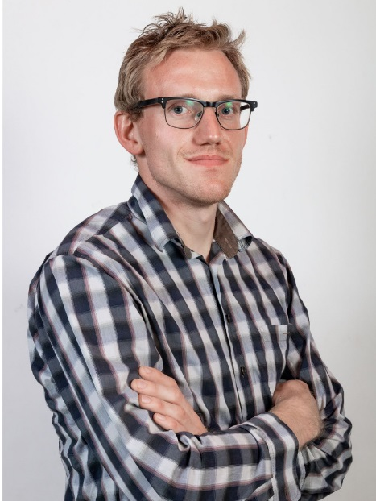

Welcome at the Personal Page of Stijn Cambie

Currently I am employed as a mathematician (funded by FWO) within a computer science department,
but there is no existential crisis as I can be considered as a problem-solver in all regards.
One may also judge based on my Academic Background.
I am a former PhD student of Ross Kang at Raboud University Nijmegen, who graduated (cum laude) the 19th of April 2022.
The title of my thesis is "Extremal aspects of distances and colourings in graphs" and one can find both a full version and a Short version of it.
The introductory talk has been done in Dutch and has been recorded; Lekenpraatje.
I have been employed as a postdoc before at Warwick University, UK and Ecopro at IBS, South-Korea.
Currently, supported by a FWO postdoctoral fellowship, I work in the ALGT group at KULAK, Belgium.
Here I also teach Analysis I and supervise master students.
My main interests and experience are in combinatorics (mostly graph theory), but I am also intruigued by e.g. number theory.
People interested to work together on related things in the future can always contact me.
Contact
Email: stijn.cambie (at) hotmail.com
Research
Most of the research papers of me and my coauthors are immediately available on Arxiv.
By the Belgian way of working, recent published papers are also made available as much as possible at Lirias.
Progress on some problems of Erdos, with different (subjective) success, can be found at Zbmath).
Teaching activities
Before the current teaching of Analysis I, I already encouraged students to process some mathematics.
I have taught exercise classes in Leuven as a master student up to May 2017 and in Nijmegen as a PhD student from September 2017 until June 2020.
Now I am teaching analysis I.
[@KU Leuven]
As a master student, I was assistant for
Linear algebra
mathematics I
mathematics II
[@Radboud]
In this period, I helped with the following courses:
Elementaire Getaltheorie (Elementary Number Theory)
Game Theory
Random Graphs
Voortgezette statistiek (advanced statistics)
Cryptography
Applied Stochastics
Probability Theory
Financial mathematics
Linear algebra
mathematics I
mathematics II
[Diverse]
In 2021, I was a highschool teacher for a short time.
For many years, I am a volunteer at the training camps of VWO vzw, where we teach talented high school students, among whom the teams for BxMO and IMO are selected.
I have a
Also I have done some tutoring.
Varia
I am involved with olympiades as well.
[Olympiads]
I proposed questions e.g. for IMO, IMSC, EGMO, [LIMO]
LIMO 2018 Q7
LIMO 2019 Q9
LIMO 2020 Q8
LIMO 2021 Q10
LIMO 2022
, BxMO and [EMC]
EMC 2013 Q2
EMC 2014 Q2
JEMC 2015 Q2
JEMC 2015 Q4
, as well as for the VFO.
I am involved with the coordination of the training at the Flemish training camps for the maths olympiads and the selection.
At the BxMO, I have been crew member, leader, PSC member and head of PSC, organisator and chief coordinator.
For the EMC (https://emc.mnm.hr/), I am the local organisator in Belgium, and the only local organisator who has done so in every edition.
I also had the opportunity to teach to some of the most brilliant young problem-solvers at the International Mathematics Summer Camp.